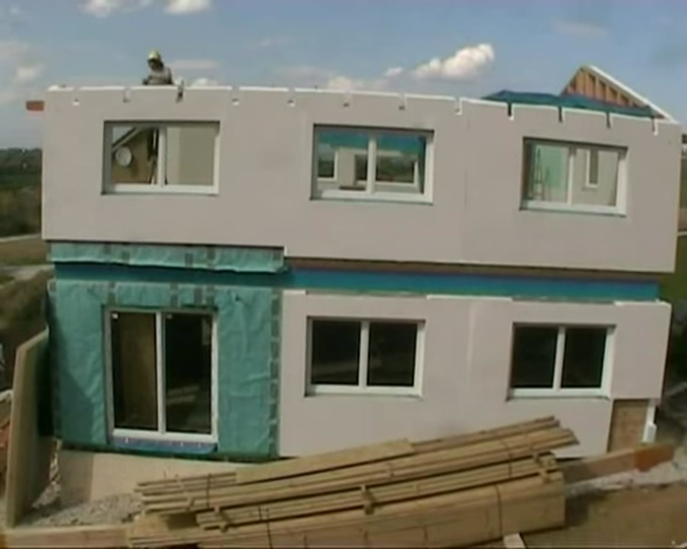

ЯРУС
Реальные кадры. Одна камера. Скролл листает этапы.
Кадры вырезаны из свободных таймлапсов: торт покрывают кремом, дом собирают на участке. Без наслоения чужих ракурсов.
Смотреть готовкуОдин кадр за раз
Источник
Не генерация и не коллаж. Последовательные кадры одной съёмки.
Торт — free stock Mixkit (фиксированный ракурс на поворотном столе). Дом — таймлапс сборки каркасного дома, Wikimedia Commons (CC). Скролл показывает только один кадр.
Дальше
Стройка с одной точки — дом вырастает в кадре.
Таймлапс prefab-дома: от площадки до готового каркаса, без склейки разных локаций.
Для компаний
Ваш таймлапс — в том же скролле
Снимаете процесс с одной камеры — мы режем на кадры и вешаем на скролл. Без чужих ракурсов и без наслоения.
- Foodготовка / декор с фиксированной точки
- Developmentтаймлапс корпуса с одной вышки
- Productionсборка изделия на линии
Обсудить проект
Учебное демо. Кадры: Mixkit (Stock Video Free License) и Wikimedia Commons (CC BY-SA). Не оферта.